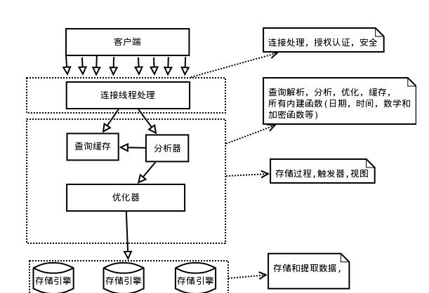
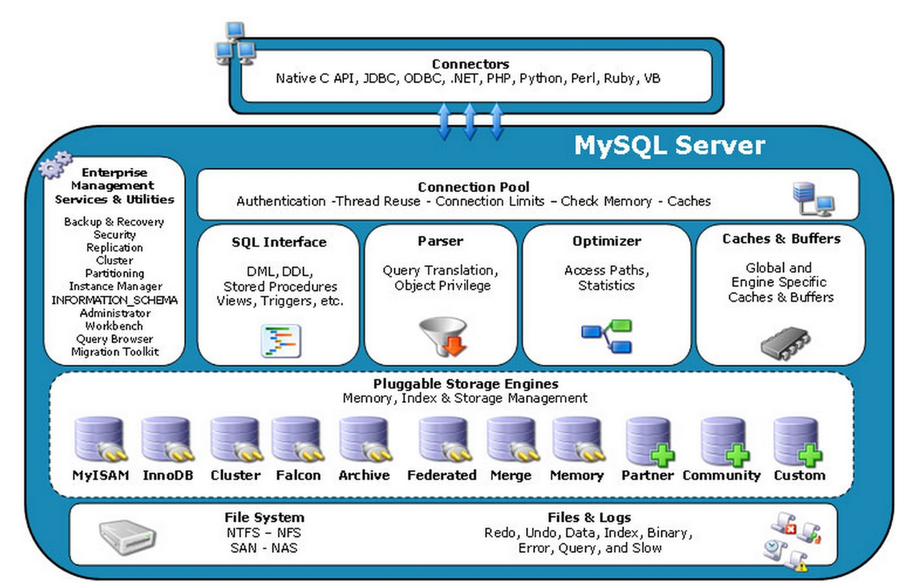

mysql 数据库的逻辑架构如下图

mysql 的逻辑的逻辑架构大体分为四层：连接层、服务层、引擎层、存储层。下面我们就来一一介绍这四层。
最上层是一些客户端和连接服务，包含本地socket通信和大多数基于客户端/服务端工具实现的类似于tcp/ip的通信。
主要完成一些类似于连接处理、授权认证、及相关的安全方案。在该层上引入了线程池的概念，为通过认证安全接入的客户端提供线程。同样在该层上可以实现基于SSL的安全链接。服务器也会为安全接入的每个客户端验证它所具有的操作权限。
当MySQL启动（MySQL服务器就是一个进程），等待客户端连接，每一个客户端连接请求，服务器都会新建一个线程处理（如果是线程池的话，则是分配一个空的线程），每个线程独立，拥有各自的内存处理空间，但是，如果这个请求只是查询，没关系，但是若是修改数据，很显然，当两个线程修改同一块内存是会引发数据同步问题的。
服务层负责解析查询(编译SQL)，并对其进行优化(如调整表的读取顺序，选择合适的索引等)。对于SELECT语句，在解析查询前，服务器会先检查查询缓存，如果能在其中找到对应的查询结果，则无需再进行查询解析、优化等过程，直接返回查询结果。存储过程、触发器、视图等都在这一层实现。
存储引擎层，存储引擎真正的负责了MySQL中数据的存储和提取，服务器通过API与存储引擎进行通信。不同的存储引擎具有的功能不同，这样我们可以根据自己的实际需要进行选取。后面介绍MyISAM和InnoDB
数据存储层，主要是将数据存储在运行于裸设备的文件系统之上，并完成与存储引擎的交互。
虽然从上图看起来 MySQL 架构非常的简单，就是简单的几部分而已，但实际上每一层中都含有各自的很多小模块，尤其是第二层服务层，结构相当复杂的。下面我们就分别针对服务层和引擎层做一个简单的分析。我们看下图体系结构：

1.Connectors
指的是不同语言中与SQL的交互。
2.Management Serveices & Utilities：
系统管理和控制工具
3.Connection Pool
管理缓冲用户连接，线程处理等需要缓存的需求。
4.SQL Interface
接受用户的SQL命令，并且返回用户需要查询的结果。比如select from就是调用SQL Interface。
5 Parser
SQL命令传递到解析器的时候会被解析器验证和解析。
解析查询，创建一个内部数据结构（解析树），这个解析树主要用来SQL语句的语义与语法解析
6 Optimizer
优化SQL语句，例如重写查询，决定表的读取顺序，以及选择需要的索引等。这一阶段用户是可以查询的，查询服务器优化器是如何进行优化的，便于用户重构查询和修改相关配置，达到最优化。这一阶段还涉及到存储引擎，优化器会询问存储引擎，比如某个操作的开销信息、是否对特定索引有查询优化等。
7 Cache、Buffer
它的主要功能是将客户端提交 给MySQL 的 Select 类 query 请求的返回结果集 cache 到内存中。该 query 所取数据的基表发生任何数据的变化之后， MySQL 会自动使该 query 的Cache 失效。在读写比例非常高的应用系统中， Query Cache 对性能的提高是非常显著的。当然它对内存的消耗也是非常大的。如果查询缓存有命中的查询结果，查询语句就可以直接去查询缓存中取数据。
8 、Pluggable Storage Engines
存储引擎是数据库管理系统用来从数据库创建、读取和更新数据的软件模块。
注意：存储引擎是基于表的，而不是数据库。
mysql的查询流程大致是：
1）mysql客户端通过协议与mysql服务器建连接，发送查询语句，先检查查询缓存，如果命中，直接返回结果，否则进行语句解析,也就是说，在解析查询之前，服务器会先访问查询缓存(query cache)——它存储SELECT语句以及相应的查询结果集。
2）语法解析器和预处理：首先mysql通过关键字将SQL语句进行解析，并生成一颗对应的“解析树”。
3）查询优化器当解析树被认为是合法的了，并且由优化器将其转化成执行计划。一条查询可以有很多种执行方式，最后都返回相同的结果。优化器的作用就是找到这其中最好的执行计划。
4）然后，mysql默认使用的BTREE索引，并且一个大致方向是:无论怎么折腾sql，至少在目前来说，mysql最多只用到表中的一个索引。
如上图所示，mysql 中包含了许多不同的存储引擎。在这里我们主要介绍两个比较常用的存储引擎：MyISAM和InnoDB。
在5.5版本之前，MyISAM是MySQL的默认存储引擎，该存储引擎并发性差，不支持事务，所以使用场景比较少，主要特点为：
（1）不支持事务；
（2）不支持外键，如果强行增加外键，不会提示错误，只是外键不其作用；
（3）对数据的查询缓存只会缓存索引，不会像InnoDB一样缓存数据，而且是利用操作系统本身的缓存；
（4）默认的锁粒度为表级锁，所以并发度很差，加锁快，锁冲突较少，所以不太容易发生死锁；
（5）支持全文索引（MySQL5.6之后，InnoDB存储引擎也对全文索引做了支持），但是MySQL的全文索引基本不会使用，对于全文索引，现在有其他成熟的解决方案，比如：ElasticSearch，Solr，Sphinx等。
（6）数据库所在主机如果宕机，MyISAM的数据文件容易损坏，而且难恢复；
从MySQL5.5版本之后，MySQL的默认内置存储引擎已经是InnoDB了，他的主要特点有：
（1）灾难恢复性比较好；
（2）支持事务。默认的事务隔离级别为可重复读，通过MVCC（并发版本控制）来实现的。
（3）使用的锁粒度为行级锁，可以支持更高的并发；
（4）支持外键；
（5）配合一些热备工具可以支持在线热备份；
（6）在InnoDB中存在着缓冲管理，通过缓冲池，将索引和数据全部缓存起来，加快查询的速度；
（7）对于InnoDB类型的表，其数据的物理组织形式是聚簇表。所有的数据按照主键来组织。数据和索引放在一块，都位于B+数的叶子节点上；
（8）InnoDB表的文件存储分为独立表空间和系统表空间，默认使用的是系统表空间
| 对比项 | MyISAM | InnoDB |
|---|---|---|
| 外键 | 不支持 | 支持 |
| 事务 | 不支持 | 支持 |
| 锁的粒度 | 表锁 | 行锁 |
| 缓存 | 只缓存索引，不缓存真实数据 | 不仅缓存索引还要缓存真实数据，对内存要求较高。 |
| 关注点 | 节省资源、消耗少、简单业务 | 并发写、事务、更大资源 |
| 查询性能 | 高 | 低，因为需要维护数据册缓存 |